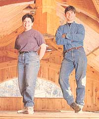
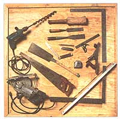
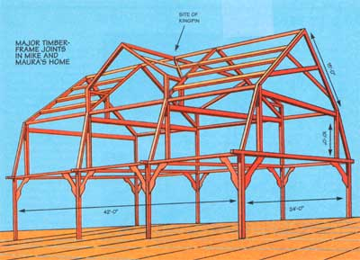
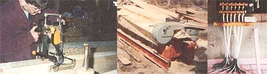
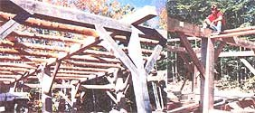
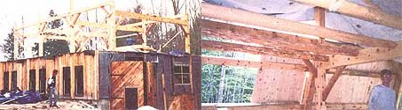
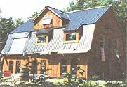

DO-IT-YOURSELF
Timber-framing: The art of joining timbers with neither nails nor screws is a pioneer art whose time has come...again.
Photos: Robin Thomas, Illustration: Wil Shelton
Had we opted for the conventional route, I'd be sitting in rush-hour traffic now, sucking in the fumes and wondering how the hell to pay my $2,000a-month mortgage. Nope, not us. Instead I'm looking out the window of our four-level 3,700-square-foot timber-framed barn house we built for under $50,000, a project we managed without a penny from Mr. Banker Man or Ma'am. No 30-year financial albatross and no sacrifices either. Here is our story and almost four years of sweat and tears to go with it.
First we had to find the land. Being from Massachusetts, we started there first ...and ended there quickly. The average land values were far too pricey for our kind of acreage. Then we trekked on to New Hampshire briefly, then finally to Maine, "the way life should be." In April of '92, we found 20 acres of harvested land in Bridgton, Maine (two hours northwest of northernmost Mass.). The land was rugged and marred by skidder trails, but for $15,000, how could we refuse? The only access, however, was via a fire lane, a narrow dirt and barely maintained road. The lane was very steep with 2' boulders throughout and many deep ruts, making it tough to travel along even when it was bone-dry. A fire truck would have to have wings to make it down this puppy. The road is utterly unpassable after the winter season, when the thaw produces a river of mud often a foot deep. Once we arrived at our "L"-shaped property, however, we discovered that it was not only breathtakingly beautiful, but had access to a remote, copper-colored bass pond. A swimmer or fisherman's dream come true. On the east shore, there are three small camps, very private and barely visible. The fire lane is directly off Route 302, a two-lane interstate, which meanders northwest from Portland to Montpelier, Vermont. Although we are 2000' in the woods, we are still only a few miles to Bridgton, a small rural town just 40 minutes northwest of Portland. We couldn't have asked for more-except a few pieces of wood over our heads.
Our first challenge was to clear a small swath to build on. We made our first attempt with a couple of friends, and it was immediately apparent this was going to be a bit larger project that we estimated. It took us all day to clear a 40' x 40' section, dragging the bush to form 6'-high stacks. The land is full of small beech trees and a multitude of mature hemlocks. The clearing process occupied the entire summer and fall of '92. During that time, Mike and I lived in a two-man nylon tent. Our "facilities" consisted of jugs of water that we hauled to the site, and a small sun shower. The previous summer, my husband Mike took a workshop, taught by Steve Chappell at the Fox Maple School of Traditional Building in Brownfield, Maine, on the basics of timber-frame construction to prepare him to build the house. Though the course wasn't exhaustive by any means, the basics that Mike was able to acquire were absolutely indispensable and saved weeks of head scratching.
Mike instantly fell in love with the simplicity of the timber-frame design and its efficient use of timbers. Timber-frame or "Post & Beam" construction, as opposed to conventional stick framing, uses beams of various sizes joined together with wooden pegs. The interior space it provides is open and airy, often with cathedral ceilings and exposed beams. We elected for a timber-frame "gambrel" (32' x 42') for our house, and Mike sketched his design with his instructor, Steve Chappell. Among other things, Steve managed to help us instantly determine the size timbers we'd need to cover the 32' spans. There were so many things to consider in the design-ceiling heights, joinery, and most important, how much lumber we could acquire and utilize from Mike's residential tree business in Mass. Mike and his dad also owned a portable band saw mill which, as might be imagined, became invaluable to us. There are a lot of guys out there who make a living with their portable mills. A bunch of money can be saved in this step alone.
We were able to use and mill trees Mike cut down in Box ford, Mass. These same pine and spruce trees would have been of no use to us before our project began. In fact, many tree companies have to pay to dispose of this soft wood. We managed put that very lumber to use and ease our conscience in the process. We continued to mill the logs until we had enough to start "cutting" or chiseling the timbers. We cut the entire bottom two floors (phase one) of our four-level monstrosity in Boxford and transported it to Maine to assemble. While still preparing the timbers for the raising, we bought a functional, old $3,500 John Deere backhoe that we used for everything from raising "bents" or trusses to digging the foundation.
By this time, we had moved from our pup tent into an old 10' x 10' canvas job. It was clear we would need something more substantial for late fall and winter. We bought an old office trailer in Mass. and hauled it up to our work site. Dragging that 28' beast down the fire lane, kicking and scratching every inch of the way, was an experience I would gladly pay ransom money to avoid in the future. It sustained minimal damage, though, and was quite functional as a shelter for us and our tools. We turned it into our home away from home, dug a shallow well, and pumped water into a 50-gallon drum that sat on top of our hovel. Now we had a gravity-feed water system for doing dishes.
We dug the foundation ourselves; each of us learning with our new toy. It would cost $4,200 and take 40 hours over a month and a half. Only two incidents occurred in the digging process. First, Mike crashed the backhoe into the 12' hole he was digging. Amazingly he did not get hurt, but the embarrassed machine was wedged into a narrow, but deep, hole. Two tow trucks had to pull him out of his own foundation. The locals instantly got a kick out of us "crazy flat-landers," and the towing company pinned up a photo of Mike and his backhoe in their office for all to see-and laugh at. Mike was embarrassed, but we joke about it now. (I admit, I laugh a lot louder.) A few weeks later I was trying to gently creep the hoe away from the foundation, when the $%&*#@'n thing rebelled against me! I thought I had put it in low gear, but the actual gear turned out to be ummm...higher. With no brakes on the unit, my only way to stop from plummeting down the incline was to drop the front bucket. Nice try, but it couldn't stop the hoe from plummeting down the hill. In a panic, I dove off the machine and rolled to safety. It, however, slammed into a stand of trees. Though flustered and making a nervous commotion, I secretly loved the action and thrill of it! Naturally, when Mike came rushing over to see what happened, I feigned terror and heartbreak so he would ignore any backhoe damage. That plan worked. In an hour, the old girl was up and rumbling again.
When the foundation was finally roughed out, we learned how to read a friend's transit to be sure we were level. Right on target. A week later, six concrete trucks poured the foundation. Phase one was ready to erect, and our first trailer load of beams was soon rumbling up to Maine. We bought three granite blocks, which we would use to support the center posts. (This step was not critical, but the granite adds a nice touch.) In the end, we saved about $2,000 by roughing out the foundation ourselves. Not bad for a couple of crashers.
Using the weeping old backhoe, we erected phase one. Sometimes Mike would be alone, raising a timber above where he needed it, letting the backhoe weep into place while he jumped off, and positioned the brace to receive the huge timber. Other times we'd take turns lifting timbers into place and fitting the braces underneath them. Mike did much of this work on his own while I was employed and off in Auburn, Maine, 40 minutes away. Technically he was living in Mass., but he spent four days at a time in Maine.
Once we had the frame up, we went into our woods and cut down 40 hemlock trees, which we used for our floor joists. Using our own trees saved us $1,500. We skidded them out with the trusty backhoe and lifted them onto the mill one by one. We milled one side flat (the side the floorboards would be nailed to). We used a draw knife to skin all the bark off the rest. This was a long, dirty, back-breaking mission. When you look up you see a rounded log in the ceiling every 3'. The pockets that were to receive these joists were dovetailed to prevent spreading. The second-level joists were a trick; we had to lift them with the backhoe and roll them carefully into place. Only one of the 400-pound logs fell from the 15'-high beams we were working on-not bad out of 42. In the entire barn, we actually had to skin and dovetail 50 of these. I suppose we could have bought 2 x 8's to do the same thing, but the look we have managed to save is irreplaceable not to mention the money.
Building the house in virtually independent "phases" was our only practical choice. We needed to insulate and sheathe phase one quickly, at least to the point where it could be heated well enough so we could move in before winter. Being warm in our new home for the first time was an experience I wished had lasted much longer. We had gone from a pup tent, to what became known locally as the "Sadaam Hussein" tent to "The Hovel" and finally to the "Superstructure." The smell of the pine and the beautiful glow of the wood made us both want to crack open a beer and dance around the place. We were re-energized and finally, fairly comfortable.
With a foot of insulation sitting on the (then) roof, our huge barrel stove kept us reasonably warm on the cold weekends of 1994. We had a 12V system set up for music and light. We also dragged a phone line (which we bought at a junkyard) a mile along the side of the fire lane. It was thrown directly on the ground, but turned out to be absolutely reliable. The phone struck us as something of a luxury, but the thought of both of us finishing the house and having no phone in the event of an accident changed our minds rapidly.
The fire lane, however, was posing a greater danger. It became a complete nuisance to drive on as the seasoned progressed. Mike tried to plow it on weekends, but it was making life miserable. We needed a solution.
In the spring of '94, I purchased an inexpensive seven-acre parcel of raw land, much of it wet. It did serve one very important purpose, however. It brought us within 1500' of power and pavement. Before I bought the land, a local excavator said we could either spend $10,000 to build up the fire lane or $10,000 to cut a road through this new parcel. The decision was obvious, and I knew I could have a road built for cheaper than one-third of a year's salary. I may be a "flatlander," but I am not an idiot. I bought the land via owner financing over five years, had a chipping company clear the "driveway" in exchange for keeping the wood chips, and hired a local excavation company to bulldoze the rough road and also do our septic for $3,000, a very reasonable sum.
Now the power. We had wrestled with the idea of an "off-the-grid" solar system with generator backup. As attracted as we were to the idea, the up-front cost was more than we could manage, and so we ended up biting the bullet on going on the grid. We had a local electrical contractor do the work in lieu of the power company and saved a ton of dough. By November of 1994, we had all we needed to live there full-time: electricity, phone and heat. A larger well had been drilled, but it was not hooked up yet. Thus, the plumbing would have to wait for six weeks. In the meantime, Mike hooked up a water heater he got at a salvage yard to our woodstove, which had a water coil in it. That was our hot water system for washing and showers. Still no commode.
We toyed with the idea of an outhouse, but it was too permanent. We opted for an outhouse with everything except walls. This forced us to make enough money to get the plumber in-pronto. Thirty-degree weather can be an excruciatingly persuasive motivator! We moved in full-time that November-me saving $400 per month in rent and Mike working full-time on the barn.
Mike worked like a dog through the winter cutting all the timbers for "phase two" of our project. The phase two raising came in the spring of 1995. At this point, we completed everything we could by ourselves. The frame was erected for the next story with the help of a crane. We sold the backhoe for what we bought it for and produced enough cash to complete phase two. This included insulation, lumber, and other materials. While debating dimensions one night, we came up with one slight design change. We wanted more room in the bedroom-the loft section of the gambrel. We added two dormers to the design. Now, how do we actually build it? A "kingpin," a friend and fellow timber framer suggested
"What the heck is a kingpin?" I thought. I was soon to discover not only what it was, but why it made our home so much more beautiful. Put simply, a kingpin is a post in the center of the barn that is octagonal shaped. It is suspended vertically by eight other beams that fit into the mortises horizontally. It reminds you of the way an umbrella works. When it sits in place, it actually pushes out the two middle bents or trusses, and hangs suspended in the middle of the structure to support the dormer ridge. We knew nothing of compound timber-frame joinery, however. We needed help. Steve Chappell, a master timber-framer, needed a creative project for his next timber-frame workshop. "Perfect, our kingpin is just the ticket!" I pleaded.
Steve had designed and built many of these elaborate frames. He liked our enthusiasm and love of timber-framing, and agreed to teach the workshop. The workshop would take place in June. It was now the beginning of April. Before you get discouraged, there are many builders, timber framers and log home contractors who put on such workshops. It is worth spending some time making contacts in this area. Not only will you meet some great people, but you will learn a great deal from them and hopefully be able to help someone else with a project when the time comes.
Before erecting phase two, we had to take off our temporary flat roof to receive the posts for the next story. We were now very exposed, with just a tarp and floor boards overhead to keep us dry. The first several weeks in April had been sunny, dry and sans wind. Then we got clobbered. One day while we were relaxing at our friend's camp on a local pond, a torrential rainstorm hit. Mike and our friend Tim jumped on the motorcycle and sped up the dirt road to our house to secure the tarps. It was too late. Mike said the big tarp looked like a spinnaker in full sail. Our only protection was gone and the rain flowed through the floorboards in sheets. Mike and Tim scrambled frantically to nail the tarp down, but the winds were too much. Soaked and blinded by rain, they worked for an hour until the storm passed. About 80 percent of what we had was soaked. This included most of my business suits, a computer and our tools. Our tarps had been relatively secure, but this storm was powerful. When Mike and Tim came back, they looked pale. It was a tough Saturday. I dried out a suit and blouse and went to the city on Monday, never letting on what happened.
It happened one more time before the extra hands of the workshop arrived This time I was alone. The tarp filled with hundreds of gallons of water and rain was coming down in buckets. With no way to move it, it was bound to spill over into our makeshift apartment. I was in shock. I grabbed a garden hose, ran upstairs and siphoned the water off the side of the house. I scurried around and secured the tarps that were flapping. Exhausted, I came down into the dripping apartment and began to cry uncontrollably. How much longer could I stand this? The women I worked with already thought I was nuts for living with neither power nor bathroom. Our only blessing was that the futon stayed dry. There were also a couple of nights when I was awakened in the wee hours by a drip, drip, dripping on my face. Somehow Mike escaped this little treat. Looking back, it was pretty comical to recall the 30-odd pots scattered around our little abode to catch the rain. A period we could easily have done without.
Now it was June, and the workshop was about to begin. We had six people come to our house, learn how to build and erect the kingpin as well as other difficult compound joinery. The workshop was an advanced one focusing on hip-and-valley timber-framing. The group that assembled had no idea how spiritual this event would become. Neither did I, despite how many times Steve told me. They spent the first two days learning theory and layout, and the next two cutting the timbers. Steve always emphasizes perfection in every cut. "Measure 42 times, cut once." He expects precision, and his students rise to the occasion. What a fantastic group of guys! They were so devoted to their trade, truly consummate professionals. Most worked and studied for 10 hours a day. Finally Saturday came, and the crane arrived at 1 P.M. We heard the "Fox Maple Sound track" all day long. That's the nickname Steve came up with for the squeaking that the beams make when you're fitting them together and the fit is tight!
My job was to feed the group, sand and oil beams, and stay calm. With Bob Marley cranked in the background and many of our close friends there to watch, the crane raised kingpin and fit it in place, 40 feet in the air. "The cherry on top," Mike used to say. It took several hours to fit each of the four geometric tenons into the complicated mortises, but by 7 P.m. we were drinking champagne! I felt like sitting down and crying, I was so happy. Mike could barely speak from exhaustion. Thankfully, we captured everything on video. We owe eternal thanks to Steve and his band of students. We became friends through this process and Mike and I will never forget them. When the whole thing came together we were all jubilant. It was a day none of us will soon forget.
Mike and I spent the next several weeks sheathing the place in with shiplap pine. Once that was complete, we insulated the entire gambrel roof from outside using 4 x 8 sheets of panel insulation. A local company makes the paneling, and we found a gross of "seconds" on sale, which fit our needs perfectly. The sheets were very easy to work with and are more "earth friendly" than stress-skin paneling. We laid them out like a puzzle where needed, putting three sheets on the roof and two sheets on the walls. The panels have an R (insulation) value of 15, giving the roof an R value of 45 and the walls 30. We used cans of foam insulation in between the panels for a tight seal. With a friend's help, we finished laying all the steel roofing on top of the insulation panels in September.
Here is the enclosure process in a nutshell: First there is the frame, which is made up of the posts and beams; then we nailed finished pine boards to the outside of the frame. At that point we laid 3 layers of 2" insulation over the boards. Then we strapped the roof horizontally with 2 x 4's over the insulation. Next, with 10" nails we fastened the strapping and insulation to the beams. Finally, we screwed the steel roofing down to the strapping to complete the roof system. The walls were done the same way, but we used rough pine boards for our interior.
We put in the last window on January 1, 1996. We bought and installed quality Andersen, double-pane windows. I insisted we buy the best. This went over budget but it was well worth it. Windows make the house. This is not an area to scrimp on, not after the hours of sweat we've put into this so far. We found two 10' x 2' eyebrow windows that had been sitting in the basement of the window store for three years. Rounded windows were not exactly what we were looking for, but when they accepted our offer of $1,000 for both-we thought, "Yea, those will look perfect, yea ...yea." The windows retail at over $1,500 each! They fit in the top of each gable end perfectly, adding a nice rounded, soft look to the barn.
At this point, we had the entire outside of the building completed. Roof, doors, windows, most of the lighting, and the trim was finished. Our next mission was to install the radiant heat. We wanted to heat with in-floor heating vs. wood stove, forced hot air, or electric because it is so comfortable. The way it works is simple: There is tubing inside the concrete floor we had poured. Hot water from a domestic hot water heater is circulated in the tubing. The tubing heats the concrete and the concrete heats the house. The warm feeling on your ankles and knees is relaxing, not to mention the heat being much less dusty and more efficient than the alternatives. Many people say the cost is much more; we, however, found the opposite to be true. If you are willing to do the installation, it is probably equal or cheaper than a conventional hot air furnace. Installing the heating system cost us $2,000. It would have been closer to $5,000 had we paid someone else to install it. We did need guidance to get started though.
Our first step here was to get in touch with a radiant heating firm. We were familiar with one in Maine, about 2 hours north of us called Earth Star Energy. They have been installing systems for over 15 years and know the business inside and out. We found their expertise invaluable. Choosing a less experienced firm, or having consulted with someone who was only slightly familiar with radiant heat, would have been a mistake. Earth Star designed the system based on information we gave them about the house, such as number of windows, square footage, purpose of each room and so on. They calculated the amount of tubing we'd need and how it should be laid out. It took us one full day to install the tubing.
First we laid pink polystyrene foam sheets over the dirt to stave off the cold geothermal. We used 1 1/2" sheets. Next, we laid down wire mesh (another side-of-the-road score) over the foam sheets and spent a couple of hours getting the wire mesh flat. Then came the tubing. Following the design to a tee, we laid the tubing with "twist ties" every foot. There are six loops, each with it's own supply and return, all in one zone. This way, if the tubing ever gets damaged (which is very rare) we will have five other loops to rely on.
The tubing went down quickly once we got the hang of it. Mike then consulted with a plumber, and plumbed up the system to the manifolds and the heating source. Another cost-efficient factor to this system is the way the water is actually heated. A simple domestic hot water heater is used not only for the heat, but for your shower and washer as well, and the ton of money that doesn't need to go to a boiler can follow a straight path to your pocket. The result is a basement floor you love to walk on barefoot. It's a great heat source for people who are allergic to dust or who have problems with dry heat.
We are now about to strip the floor in what will become our actual living space on the third floor. We will install radiant heat there as well. However, up there we will use metal reflectors under the decking instead of concrete. We could probably get away with a direct-vent heater or woodstove for roughly the same amount of money, we'll have the most cozy heat on the planet.
Now, we are 90 percent completed. Once the floor is laid down, we'll hire plumbers to handle the kitchen and bathrooms. We have four walls to put up, which have already been framed and only need to be Sheet rocked. We are still deciding on the flooring and the appliances. Conservatively, we have about six months. We got married in the meantime, which took some time away from the project along with entertaining friends and family on weekends. All in all, however, we are pleased with the progress. Although we spent most of our time building our home, our businesses are starting to blossom. Mike has now started his own company called Tree Master Timber Frames and is building timber-framed homes for folks all over the U. S. ( http://Timberframe.com ) I have set up an Internet consulting and web design business here in the barn (http://planet.maine.com) and work is streaming in for both of us!
Naturally, in a project of this size, I have condensed many of the facts in order to be concise; however, we have photographed and videotaped the project in its entirety When we have visitors, they can't fathom the extent of the undertaking. Don't be intimidated for a moment. With some patience, this is something anyone handy with a hammer and nail could do. In each phase of the project we visualized it completed. We broke each task down into smaller jobs and focused on that-not the project in it's entirety. We are very proud that we were able to avoid long-term bank financing. We owner-financed the land and borrowed a small sum from family. Thanks to the encouragement, support, and love of our friends (new and old) and family, we have made one of our dreams come true. It truly is amazing what you can do through visualization, attitude, and hard work. We encourage everyone to shut off the TV and do it!
1. Leave the excavation, wells, and foundation to the pros. Running a backhoe is fun, but can be dangerous and time-consuming.
2. If you can, don't live in the structure before it is 100 percent tight to save yourself from checking into a mental ward.
3. Always plan to spend more money than you anticipate -always.
4. Buy the best building materials you can possibly afford. Saving on labor allows you to spend more on quality materials.
5. Be patient. To save yourself a 30-year mortgage, a one- or two-year sacrifice is a bargain.
6. Consider carefully how you live. Where do you need that bookshelf? Do you need a place to store your wrapping paper? How about your brooms, mops, etc.?
7. If you are moving to a new part of the country or state, join the local civic clubs and let them know your plans. You'll find out quickly who you can rely on (i.e., electricians, plumbers, etc.) and who you should stay away from.
8. Have fun, throw parties, invite friends to help, and keep it enjoyable!!
|
 Timber-framing is designed simplicity, evidenced by the few tools required to do it. |
 Here, Mike puts the finishing touches on a timber, applying the skills he picked up in Steve Chapell's course...Cutting and milling the pine and spruce timbers (logs that are often considered waste wood) ourselves was a fantastic way to save money...Our radiant heat system uses hot water to heat these tubes enclosed with in the concrete floor. |
 Phase one under construction: Mike takes a rest (right) after preparing the timber frames to receive the 40 timber joists. Left you can see the hemlock joists in position. |
|
 Left: Our precariously leaky roof over phase one was little more than a tarp and the hope for no rain. Right: The second story (phase two) taking shape: you can see the shiplap pine sleathing in the background, insulted with 4 x 8 pieces of panel insulation. |
 After more than three years of work, our home is finally sheathed and roofed. |
 |
|
 |
|
|